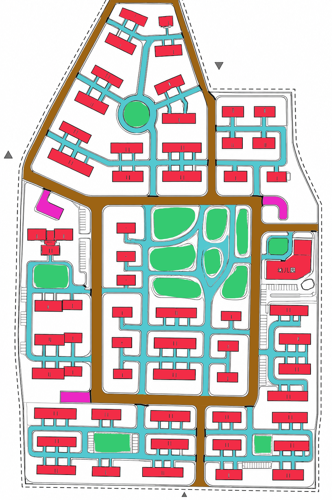

review required not a confirmation pilot subset, not survey-grade
Source sketch: docs/e2e/sketch-001/source/sketch.png
(SHA-256 07714b66f6405d7d…)
Review kind: designer_authorized_pilot; object geometry review: False; human confirmation claimed: false.
Transform: uniform_scale_translation_yflip; homography applied: False; frame: LOCAL-XY-ZUP; scale 2.438 px/m (range 2.25–2.89); scale source: private six-point homography reduced to a uniform scale for the pilot; the matrix is not published; origin source: published sketch site-boundary bounding box (min x, max y).
Site boundary authority: published_sketch_boundary. The published sketch boundary is not the authoritative site boundary and does not become canonical SITE-001.

Coloured outlines mark the selected objects in image space. The small panels below show each object in local metric space with a scale bar; the bar length follows the declared scale range.
| geometry state | proposed |
| source object | SK-BND-001 |
| area (local) | 204122.79 m² [145265.74, 239659.06] |
| perimeter (local) | 1921.10 m [1620.64, 2081.62] |
| centroid shift | 53.691 m |
| geometry hash | d0faccdc67c07f79… |
Questions: semantic role? outline at pilot scope? local metric placement acceptable?
| geometry state | proposed |
| source object | SK-BLD-0007 |
| area (local) | 565.96 m² [402.77, 664.49] |
| perimeter (local) | 118.95 m [100.35, 128.89] |
| centroid shift | 71.846 m |
| geometry hash | 61038e554958a90c… |
Questions: semantic role? outline at pilot scope? local metric placement acceptable?
| geometry state | proposed |
| source object | SK-BLD-MRG-0001 |
| area (local) | 930.21 m² [661.99, 1092.15] |
| perimeter (local) | 283.41 m [239.09, 307.09] |
| centroid shift | 51.921 m |
| geometry hash | 1a6c196afb9b9767… |
Questions: semantic role? outline at pilot scope? local metric placement acceptable?
| geometry state | proposed |
| source object | SK-GRN-0001 |
| area (local) | 1629.75 m² [1159.83, 1913.48] |
| perimeter (local) | 154.35 m [130.21, 167.25] |
| centroid shift | 63.047 m |
| geometry hash | e77193d610701d8b… |
Questions: semantic role? outline at pilot scope? local metric placement acceptable?
| geometry state | proposed |
| source object | SK-RDC-U-0008 |
| area (local) | 0.00 m² [0.00, 0.00] |
| perimeter (local) | 71.45 m [60.28, 77.42] |
| centroid shift | 67.039 m |
| geometry hash | 71cb5bef1679a204… |
Questions: semantic role? outline at pilot scope? local metric placement acceptable?
| geometry state | proposed |
| source object | SK-RDC-U-0010 |
| area (local) | 0.00 m² [0.00, 0.00] |
| perimeter (local) | 65.48 m [55.24, 70.95] |
| centroid shift | 62.677 m |
| geometry hash | e721377736a3aa61… |
Questions: semantic role? outline at pilot scope? local metric placement acceptable?
| geometry state | proposed |
| source object | SK-RDC-U-0017 |
| area (local) | 0.00 m² [0.00, 0.00] |
| perimeter (local) | 51.27 m [43.25, 55.56] |
| centroid shift | 60.671 m |
| geometry hash | c750eb39238d609c… |
Questions: semantic role? outline at pilot scope? local metric placement acceptable?
{
"ok": true,
"errors": [],
"component_count": 1,
"node_count": 4,
"edge_count": 3,
"junction_node_ids": [
"SK-RDN-0126"
],
"endpoint_node_ids": [
"SK-RDN-0067",
"SK-RDN-0125",
"SK-RDN-0209"
],
"endpoint_tolerance_px": 4.0,
"max_endpoint_offset_px": 3.605551275463989,
"edge_offsets": [
{
"edge_id": "SK-RDC-U-0008",
"start_node": "SK-RDN-0209",
"end_node": "SK-RDN-0126",
"start_offset_px": 3.605551275463989,
"end_offset_px": 1.0
},
{
"edge_id": "SK-RDC-U-0010",
"start_node": "SK-RDN-0126",
"end_node": "SK-RDN-0067",
"start_offset_px": 0.0,
"end_offset_px": 0.0
},
{
"edge_id": "SK-RDC-U-0017",
"start_node": "SK-RDN-0125",
"end_node": "SK-RDN-0126",
"start_offset_px": 2.23606797749979,
"end_offset_px": 1.0
}
],
"degrees": {
"SK-RDN-0067": 1,
"SK-RDN-0125": 1,
"SK-RDN-0126": 3,
"SK-RDN-0209": 1
},
"corridors": {
"R-SK-MAIN-001": [
"SK-RDC-U-0008",
"SK-RDC-U-0010"
],
"R-SK-BRANCH-001": [
"SK-RDC-U-0017"
]
},
"expected": {
"expected_component_count": 1,
"expected_node_count": 4,
"expected_edge_count": 3,
"expected_junction_node_ids": [
"SK-RDN-0126"
],
"expected_endpoint_node_ids": [
"SK-RDN-0067",
"SK-RDN-0125",
"SK-RDN-0209"
],
"endpoint_tolerance_px": 4.0
}
}
Fill review-confirmation-template.yaml, set
human_confirmed_trace: true, record reviewed_at
and basis, and give every object a geometry and coordinate
decision. The Agent cannot sign this for you.